Presentation topics
- You can choose to do a presentation for 10% of your grade (see syllabus for details),
- Presentations will be 10 minutes plus 2 minutes for questions (I will have to be strict on timings to fit everyone in),
- You will present to the whole group in one of our normal class times,
- You may present however you think best illustrates the key ideas (you may use the whiteboards, slides, jupyter notebook, ….),
- Note that 10 minutes is not very long! Pick something interesting but be wary of the time constraints,
- It would be nice if your presentation included some numerical implementation. You may submit accompanying numerical experiments,
- If you have your own ideas please let me know and I can advise if they are suitable,
- Here is a list of potential presentation topics. Some topics have a collapsed Quick experiment box with a short Julia experiment you could start from (the outputs shown are what we got). Topics marked with ★ are more challenging (either the mathematics is harder or there is a lot to fit into 10 minutes). The references are suggestions for where to start.
Chapter 1: Basics of numerical analysis and floating point numbers
Floating point disasters. Research a time when real world problems have occurred because floating point numbers were not handled properly (e.g. the Patriot missile failure in 1991, the Ariane 5 explosion in 1996, or the Vancouver Stock Exchange index). What went wrong, and how could it have been avoided? (Arnold, n.d.)
Horner’s method. Evaluate a polynomial of degree \(n\) using only \(n\) multiplications and \(n\) additions. Compare the cost and the rounding errors with the naive approach. (Higham 2002, Ch. 5)
TipQuick experimentnaive(c, x) = sum(c[k+1] * x^k for k in 0:length(c)-1) # computes every power x^k separately function horner(c, x) # n multiplications and n additions p = c[end] for k in length(c)-1:-1:1 p = c[k] + x * p end return p end c = randn(1001) # a polynomial of degree n = 1000 xs = range(-1, 1, length = 10^4) naive(c, 0.5); horner(c, 0.5) # compile first println("naive: ", round(@elapsed(naive.(Ref(c), xs)), sigdigits = 2), " s") println("Horner: ", round(@elapsed(horner.(Ref(c), xs)), sigdigits = 2), " s") println("largest difference: ", maximum(abs.(naive.(Ref(c), xs) .- horner.(Ref(c), xs))))Output:
naive: 0.56 s Horner: 0.068 s largest difference: 6.750155989720952e-14Horner’s method is several times faster…
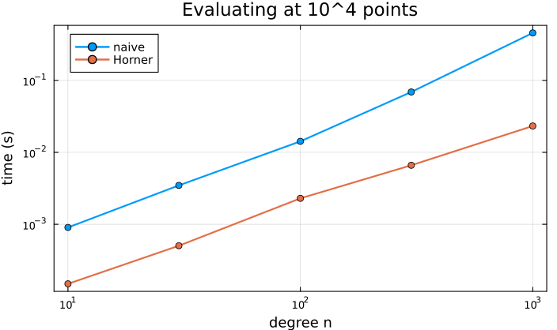
Plot code
using Plots ns = [10, 30, 100, 300, 1000] tn, th = Float64[], Float64[] for n in ns cn = randn(n + 1) push!(tn, @elapsed naive.(Ref(cn), xs)) push!(th, @elapsed horner.(Ref(cn), xs)) end plot(ns, [tn th], xscale = :log10, yscale = :log10, marker = :circle, lw = 2, label = ["naive" "Horner"], xlabel = "degree n", ylabel = "time (s)", title = "Evaluating at 10^4 points")Compensated (Kahan) summation. Adding many floating point numbers accumulates rounding error (Lecture 2). Kahan’s algorithm keeps track of the lost low order bits. Demonstrate the improvement numerically. (Kahan 1965; Higham 2002, Ch. 4)
TipQuick experimentfunction kahan_sum(xs) s = zero(eltype(xs)); c = zero(eltype(xs)) # c collects the lost low-order bits for x in xs y = x - c t = s + y c = (t - s) - y s = t end return s end xs = fill(0.1f0, 10^7) # ten million copies of 0.1 in Float32 println("naive loop: ", foldl(+, xs)) # adds one at a time println("Kahan: ", kahan_sum(xs)) println("exact: ", 10^7 * 0.1)Output:
naive loop: 1.087937e6 Kahan: 1.0e6 exact: 1.0e6Adding one number at a time in
Float32is about 9% out; Kahan’s algorithm gets every digit right. (Julia’s built-insumuses pairwise summation, which is another fix: comparesum(xs).)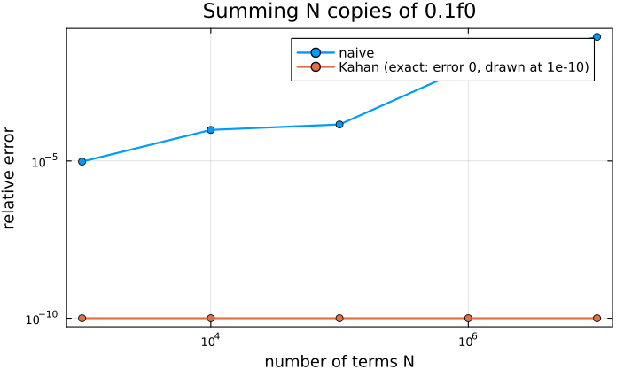
Plot code
using Plots Ns = [10^k for k in 3:7] err(s, N) = abs(s - N / 10) / (N / 10) naive_err = [err(foldl(+, fill(0.1f0, N)), N) for N in Ns] kahan_err = [max(err(kahan_sum(fill(0.1f0, N)), N), 1e-10) for N in Ns] plot(Ns, [naive_err kahan_err], xscale = :log10, yscale = :log10, marker = :circle, lw = 2, label = ["naive" "Kahan (exact: error 0, drawn at 1e-10)"], xlabel = "number of terms N", ylabel = "relative error", title = "Summing N copies of 0.1f0")Avoiding subtractive cancellation. Building on Lecture 3: the quadratic formula,
log1pandexpm1, the variance formula, … How can we rewrite formulas to avoid catastrophic cancellation? (Goldberg 1991)The fast inverse square root. The famous trick from the video game Quake III computes \(1/\sqrt{x}\) by reinterpreting the bits of a
Float32as an integer, followed by one step of Newton’s method. Explain why it works.TipQuick experimentfunction fast_inv_sqrt(x::Float32) i = reinterpret(UInt32, x) # the bits of x as an integer i = 0x5f3759df - (i >> 1) # the magic step y = reinterpret(Float32, i) return y * (1.5f0 - 0.5f0 * x * y * y) # one Newton step for 1/y^2 - x = 0 end for x in (0.5f0, 2f0, 10f0, 1234.5f0) println("x = $x: fast = ", fast_inv_sqrt(x), ", 1/sqrt(x) = ", 1 / sqrt(x), ", rel. error = ", abs(fast_inv_sqrt(x) * sqrt(x) - 1)) endOutput:
x = 0.5: fast = 1.4138601, 1/sqrt(x) = 1.4142135, rel. error = 0.00024998188 x = 2.0: fast = 0.70693004, 1/sqrt(x) = 0.70710677, rel. error = 0.00024998188 x = 10.0: fast = 0.31568578, 1/sqrt(x) = 0.31622776, rel. error = 0.0017139316 x = 1234.5: fast = 0.02846043, 1/sqrt(x) = 0.028461281, rel. error = 2.9921532e-5The relative error is always below 0.2%. What happens without the Newton step? With two Newton steps?
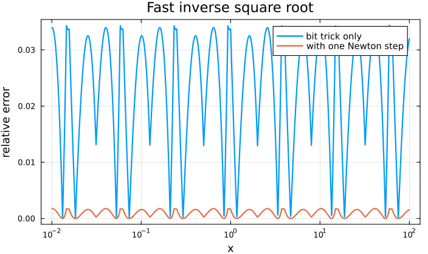
Plot code
using Plots xs = 10 .^ range(-2, 2, length = 2000) no_newton(x::Float32) = reinterpret(Float32, 0x5f3759df - (reinterpret(UInt32, x) >> 1)) e0 = [abs(no_newton(Float32(x)) * sqrt(x) - 1) for x in xs] e1 = [abs(fast_inv_sqrt(Float32(x)) * sqrt(x) - 1) for x in xs] plot(xs, [e0 e1], xscale = :log10, lw = 2, label = ["bit trick only" "with one Newton step"], xlabel = "x", ylabel = "relative error", title = "Fast inverse square root")Low precision arithmetic in machine learning.
Float16,bfloat16and 8-bit formats: what do we give up and why is it worth it? (Higham and Mary 2022)
Chapter 2: Solving nonlinear equations in 1d
(Pick a topic that is not already covered in an assignment.)
Halley’s method. Uses \(f''\) as well as \(f'\) to obtain cubic convergence. Derive it and compare with Newton’s method (Lecture 5). (Scavo and Thoo 1995)
TipQuick experimentf(x) = x^3 - 2; df(x) = 3x^2; d2f(x) = 6x ξ = cbrt(2) xn = xh = 1.0 for n in 1:4 global xn = xn - f(xn) / df(xn) global xh = xh - 2f(xh) * df(xh) / (2df(xh)^2 - f(xh) * d2f(xh)) println("n = $n: Newton error = ", round(abs(xn - ξ), sigdigits = 2), ", Halley error = ", round(abs(xh - ξ), sigdigits = 2)) endOutput:
n = 1: Newton error = 0.073, Halley error = 0.0099 n = 2: Newton error = 0.004, Halley error = 4.1e-7 n = 3: Newton error = 1.2e-5, Halley error = 0.0 n = 4: Newton error = 1.2e-10, Halley error = 0.0Newton roughly doubles the number of correct digits at each step; Halley roughly triples it.
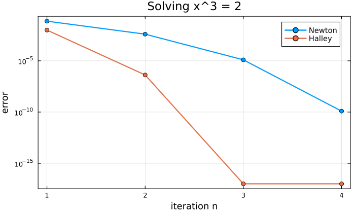
Plot code
using Plots en, eh = Float64[], Float64[] xn = xh = 1.0 for n in 1:4 global xn = xn - f(xn) / df(xn) global xh = xh - 2f(xh) * df(xh) / (2df(xh)^2 - f(xh) * d2f(xh)) push!(en, abs(xn - ξ)); push!(eh, abs(xh - ξ)) end plot(1:4, max.([en eh], 1e-17), yscale = :log10, marker = :circle, lw = 2, label = ["Newton" "Halley"], xlabel = "iteration n", ylabel = "error", title = "Solving x^3 = 2")Osada’s method. Newton’s method only converges linearly to a repeated root. Osada’s method recovers fast convergence for roots of known multiplicity. (Osada 1994)
TipQuick experiment# f has a double root at ξ = 1 f(x) = (x - 1)^2 * exp(x); df(x) = (x - 1) * (x + 1) * exp(x) x1 = x2 = 2.0 for n in 1:6 global x1 = x1 - f(x1) / df(x1) # Newton: linear convergence global x2 = x2 - 2f(x2) / df(x2) # Newton with the multiplicity m = 2 println("n = $n: Newton error = ", rpad(abs(x1 - 1), 24), "modified: ", abs(x2 - 1)) endOutput:
n = 1: Newton error = 0.6666666666666665 modified: 0.33333333333333326 n = 2: Newton error = 0.4166666666666665 modified: 0.04761904761904745 n = 3: Newton error = 0.24425287356321834 modified: 0.001107419712070845 n = 4: Newton error = 0.13541804641853217 modified: 6.128498684088157e-7 n = 5: Newton error = 0.07200280711883078 modified: 1.8784973576657649e-13 n = 6: Newton error = 0.03725246466203047 modified: 0.0At a double root Newton’s method only converges linearly (the error roughly halves); using the multiplicity restores quadratic convergence. Osada’s method does this for roots of known multiplicity with an even faster method.
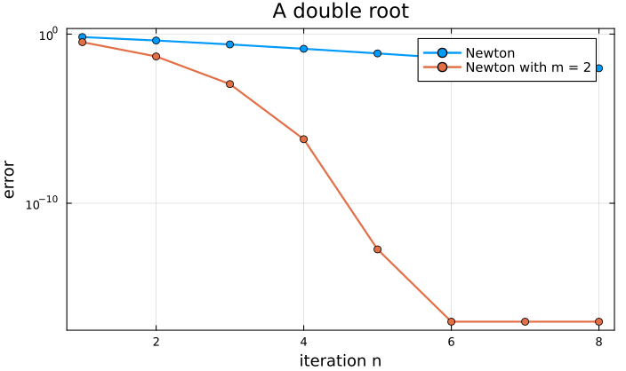
Plot code
using Plots e1, e2 = Float64[], Float64[] x1 = x2 = 2.0 for n in 1:8 global x1 = x1 - f(x1) / df(x1) global x2 = x2 == 1 ? x2 : x2 - 2f(x2) / df(x2) push!(e1, abs(x1 - 1)); push!(e2, abs(x2 - 1)) end plot(1:8, max.([e1 e2], 1e-17), yscale = :log10, marker = :circle, lw = 2, label = ["Newton" "Newton with m = 2"], xlabel = "iteration n", ylabel = "error", title = "A double root")Steffensen’s method. A derivative-free method which still converges quadratically. (Burden, Faires, and Burden 2016, sec. 2.5)
Traub’s method. A two-step method (a Newton step followed by a corrected step) with cubic convergence. (Traub 1964)
Aitken’s \(\Delta^2\) method. Accelerate a linearly convergent sequence (e.g. from the simple iterations of Lecture 4). Also see how this is connected to Steffensen’s method. (Burden, Faires, and Burden 2016, sec. 2.5)
TipQuick experiment# simple iteration x_{n+1} = cos(x_n) converges linearly to ξ ≈ 0.739085... x = [1.0] for n in 1:12; push!(x, cos(x[end])); end ξ = 0.7390851332151607 aitken = [x[n] - (x[n+1] - x[n])^2 / (x[n+2] - 2x[n+1] + x[n]) for n in 1:length(x)-2] for n in 1:2:9 println("n = $n: |x_n - ξ| = ", abs(x[n] - ξ), ", Aitken: ", abs(aitken[n] - ξ)) endOutput:
n = 1: |x_n - ξ| = 0.2609148667848393, Aitken: 0.011074771747543566 n = 3: |x_n - ξ| = 0.11846808263123276, Aitken: 0.0021788388746868392 n = 5: |x_n - ξ| = 0.054395225527404945, Aitken: 0.0004490363335053482 n = 7: |x_n - ξ| = 0.02487454968549352, Aitken: 9.289018812674854e-5 n = 9: |x_n - ξ| = 0.011332628548599843, Aitken: 1.91836152196867e-5Aitken’s sequence is several hundred times more accurate than the simple iteration it is built from, at no extra cost.
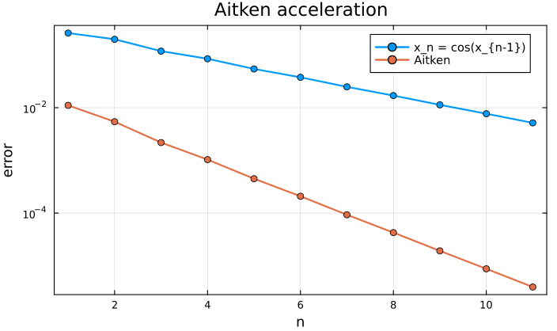
Plot code
using Plots n = 1:length(aitken) plot(n, [abs.(x[n] .- ξ) abs.(aitken .- ξ)], yscale = :log10, marker = :circle, lw = 2, label = ["x_n = cos(x_{n-1})" "Aitken"], xlabel = "n", ylabel = "error", title = "Aitken acceleration")Brent’s method. Combines the reliability of bisection with the speed of the secant method and inverse quadratic interpolation. This (or something similar) is what most software (e.g.
fzeroin MATLAB orRoots.jlin Julia) uses. (Brent 1971)Newton fractals. Apply Newton’s method to \(z^3 - 1 = 0\) in the complex plane and colour each starting point by which root it converges to. Why is the boundary between the basins of attraction so complicated?
TipQuick experimentusing Plots f(z) = z^3 - 1; df(z) = 3z^2 roots = [1, cis(2π / 3), cis(-2π / 3)] function basin(z) for _ in 1:50 z = z - f(z) / df(z) end return argmin(abs.(z .- roots)) # which root did we end up at? end xs = range(-2, 2, length = 600) B = [basin(complex(x, y)) for y in xs, x in xs] heatmap(xs, xs, B, aspect_ratio = 1, legend = false, title = "Newton's method for z^3 = 1") savefig("newton-fractal.png")This produces the picture below (each colour is one of the three cube roots of \(1\)). Zoom in on the boundary by changing
xs.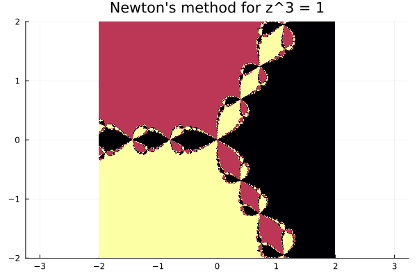
Efficient methods for finding zeros of polynomials. For example, the Durand–Kerner method finds all roots of a polynomial simultaneously. (Burden, Faires, and Burden 2016, sec. 2.6)
Solving nonlinear equations in \(d > 1\) dimensions. ★ Newton’s method for systems \(F(x) = 0\), the Jacobian, and quasi-Newton methods (e.g. Broyden’s method). (Süli and Mayers 2003, Ch. 4)
Chapter 3: Polynomial interpolation
The equioscillation theorem. ★ In Lecture 7 we showed that the monic Chebyshev polynomial \(t_{n+1} = 2^{-n}T_{n+1}\) solves the Chebyshev problem. Equivalently, \(p^\star(x) = x^{n+1} - t_{n+1}(x)\) is the best approximation of \(f(x) = x^{n+1}\) in \(\mathcal P_n\) with respect to \(\|\cdot\|_{L^\infty([-1,1])}\). The error \(f - p^\star = t_{n+1}\) attains its maximum absolute value \(2^{-n}\) at the \(n+2\) points \(\cos\frac{j\pi}{n+1}\) with alternating signs. The equioscillation theorem says that this is not a coincidence: for any continuous \(f\) on \([a,b]\), \(p^\star \in \mathcal P_n\) is the best approximation of \(f\) if and only if there exist \(n+2\) points \(a \leq \xi_0 < \xi_1 < \dots < \xi_{n+1} \leq b\) with \[ f(\xi_j) - p^\star(\xi_j) = \pm (-1)^j \| f - p^\star \|_{L^\infty([a,b])}. \] You could state the theorem, prove the “if” direction (which uses the same sign changing argument as in Lecture 7), discuss uniqueness, and (time permitting) explain how the Remez algorithm uses the theorem to compute \(p^\star\). (Süli and Mayers 2003, Ch. 8; Trefethen 2019, Ch. 10)
How does a computer compute \(\sin x\) or \(e^x\)? Range reduction followed by a carefully chosen polynomial (or rational) approximation; the polynomials are often best approximations in the sense of the equioscillation theorem. Pairs well with topic 1. (Muller 2006)
Weierstrass approximation theorem and Bernstein polynomials. Every continuous function on \([a,b]\) can be uniformly approximated by polynomials. Bernstein polynomials give a constructive proof (and are used in computer graphics as Bézier curves). (Trefethen 2019, Ch. 6)
TipQuick experiment# Bernstein polynomial B_n f(x) = Σ_k f(k/n) C(n,k) x^k (1-x)^(n-k) on [0,1] bern(f, n, x) = sum(f(k / n) * binomial(big(n), k) * x^k * (1 - x)^(n - k) for k in 0:n) f(x) = abs(x - 0.5) t = range(0, 1, length = 501) for n in (10, 40, 160, 640) err = maximum(abs(f(s) - Float64(bern(f, n, big(s)))) for s in t) println("n = $n: max error = ", round(err, sigdigits = 3)) endOutput:
n = 10: max error = 0.123 n = 40: max error = 0.0627 n = 160: max error = 0.0315 n = 640: max error = 0.0158Bernstein polynomials converge, but only like \(n^{-1/2}\) for \(|x - \tfrac12|\): quadrupling \(n\) only halves the error. Compare with Chebyshev interpolation below.
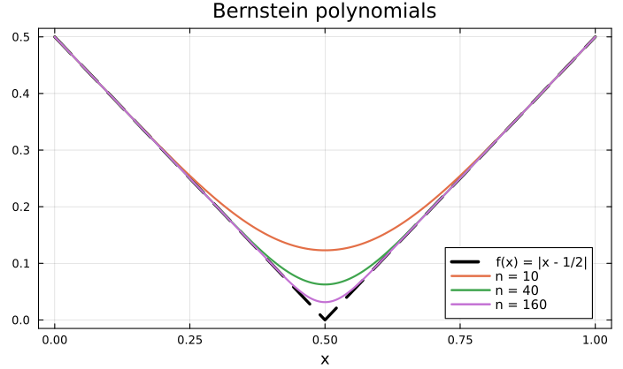
Plot code
using Plots plot(f, 0, 1, lw = 3, ls = :dash, color = :black, label = "f(x) = |x - 1/2|", xlabel = "x", title = "Bernstein polynomials") for n in (10, 40, 160) plot!(t, [Float64(bern(f, n, big(s))) for s in t], lw = 2, label = "n = $n") end plot!()Lebesgue constants. ★ The Lebesgue constant \(\Lambda_X\) measures how far interpolation on \(X\) can be from the best approximation: \(\|f - I_X f\|_{L^\infty} \leq (1 + \Lambda_X) \|f - p^\star\|_{L^\infty}\). It grows exponentially for equispaced points but only logarithmically for Chebyshev points. This explains the Runge phenomenon from Lecture 6 from a different point of view. (Trefethen 2019, Ch. 15)
TipQuick experiment# Lebesgue constant Λ_X = max_x Σ_j |ℓ_j(x)| function lebesgue(X; m = 5000) t = range(-1, 1, length = m) maximum(sum(abs(prod((s - X[k]) / (X[j] - X[k]) for k in eachindex(X) if k != j)) for j in eachindex(X)) for s in t) end println(" n equispaced Chebyshev") for n in (5, 10, 20, 30) equi = range(-1, 1, length = n + 1) cheb = [cos(j * π / n) for j in 0:n] println(lpad(n, 2), " ", rpad(round(lebesgue(equi), sigdigits = 4), 12), round(lebesgue(cheb), sigdigits = 4)) endOutput:
n equispaced Chebyshev 5 3.106 1.989 10 29.9 2.421 20 10990.0 2.868 30 6.601e6 3.127Exponential growth for equispaced points, logarithmic growth for Chebyshev points.
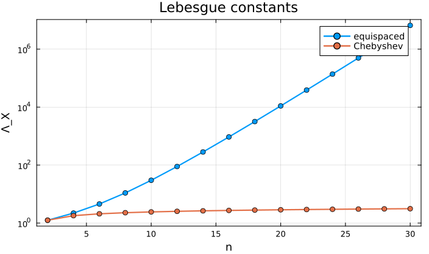
Plot code
using Plots ns = 2:2:30 Le = [lebesgue(range(-1, 1, length = n + 1)) for n in ns] Lc = [lebesgue([cos(j * π / n) for j in 0:n]) for n in ns] plot(ns, [Le Lc], yscale = :log10, marker = :circle, lw = 2, label = ["equispaced" "Chebyshev"], xlabel = "n", ylabel = "Λ_X", title = "Lebesgue constants")Convergence of Chebyshev interpolation for functions of different smoothness. Investigate numerically how fast \(\|f - I_X f\|_{L^\infty}\) decreases for \(f(x) = |x|\), \(|x|^3\), \(\frac{1}{1 + 25x^2}\), \(e^x\), …. Explain the algebraic rates for functions with finitely many derivatives. ★ For analytic functions, explain the geometric rates using the Bernstein ellipse. (Trefethen 2019, Ch. 7-8)
TipQuick experiment# max error of Chebyshev interpolation (second kind points, barycentric formula) function cheb_interp_error(f, n) x = [cos(j * π / n) for j in 0:n] w = [(-1.0)^j * (j == 0 || j == n ? 0.5 : 1.0) for j in 0:n] p(t) = (i = findfirst(==(t), x)) !== nothing ? f(x[i]) : sum(w .* f.(x) ./ (t .- x)) / sum(w ./ (t .- x)) t = range(-1, 1, length = 2001) return maximum(abs(f(s) - p(s)) for s in t) end fs = [("|x|", x -> abs(x)), ("|x|^3", x -> abs(x)^3), ("1/(1+25x^2)", x -> 1 / (1 + 25x^2)), ("exp(x)", exp)] println(rpad("n", 6), join([rpad(name, 14) for (name, _) in fs])) for n in (8, 16, 32, 64, 128) println(rpad(n, 6), join([rpad(round(cheb_interp_error(f, n), sigdigits = 2), 14) for (_, f) in fs])) endOutput:
n |x| |x|^3 1/(1+25x^2) exp(x) 8 0.074 0.0021 0.2 2.2e-8 16 0.037 0.00026 0.037 2.2e-15 32 0.019 3.3e-5 0.0016 2.7e-15 64 0.0093 4.1e-6 2.9e-6 2.2e-15 128 0.0047 5.1e-7 8.7e-12 2.2e-15Doubling \(n\) halves the error for \(|x|\) (rate \(n^{-1}\)) and divides it by 8 for \(|x|^3\) (rate \(n^{-3}\)), while the error for the analytic functions decreases geometrically.
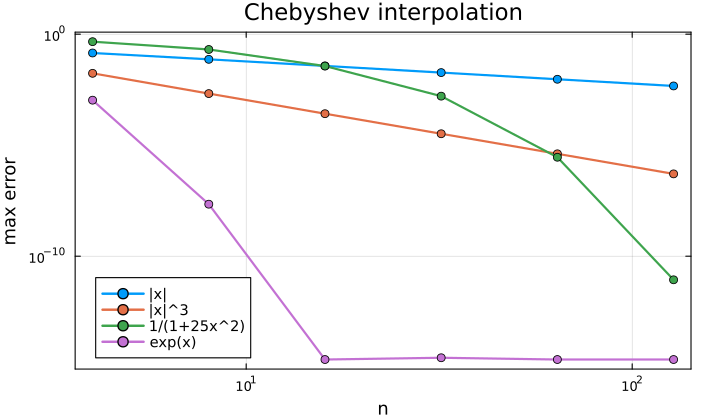
Plot code
using Plots ns = [4, 8, 16, 32, 64, 128] plt = plot(xscale = :log10, yscale = :log10, xlabel = "n", ylabel = "max error", title = "Chebyshev interpolation", legend = :bottomleft) for (name, f) in fs plot!(plt, ns, [max(cheb_interp_error(f, n), 1e-17) for n in ns], marker = :circle, lw = 2, label = name) end pltStability of the barycentric formula. ★ In Lecture 8, the naive Lagrange formula broke down for \(n \gtrsim 800\) whereas the barycentric formula was accurate for \(n = 10\,000\). Explain why, and the difference between the “first” and “second” barycentric formulas. (Berrut and Trefethen 2004; Higham 2004)
Neville’s method. A recursive way of evaluating the interpolating polynomial at a single point, closely related to the divided differences of Lecture 8. (Burden, Faires, and Burden 2016, sec. 3.2)
Cubic spline interpolation. Piecewise cubic polynomials which avoid the Runge phenomenon. Constructing a spline requires solving a tridiagonal linear system. (Süli and Mayers 2003, Ch. 11; Burden, Faires, and Burden 2016, sec. 3.5)
Rational interpolation. Rational functions can capture poles and sharp features much better than polynomials. For example, Floater–Hormann interpolation is a barycentric formula with different weights which works well for equispaced points. (Floater and Hormann 2007)
Companion matrices. The roots of a polynomial are the eigenvalues of its companion matrix (this is what
rootsinPolynomials.jland MATLAB does). For polynomials written in the Chebyshev basis, there is a similar colleague matrix. (Trefethen 2019, Ch. 18)Computing with functions: Chebfun. ★ How the Chebfun software represents functions by their Chebyshev interpolants, chooses the degree \(n\) automatically, and computes Chebyshev coefficients using the fast Fourier transform. (Trefethen 2019, Ch. 3-4)
Chapter 4: Numerical integration
Richardson extrapolation. Combine approximations computed with different step sizes to cancel the leading order error term. (Burden, Faires, and Burden 2016, sec. 4.2)
TipQuick experiment# trapezoidal rule T(h) has error ≈ C h^2, so (4T(h/2) - T(h))/3 cancels the h^2 term trap(f, a, b, n) = (h = (b - a) / n; h * (sum(f(a + k * h) for k in 1:n-1) + (f(a) + f(b)) / 2)) I = 2.0 # ∫_0^π sin x dx for n in (4, 8, 16, 32) T1, T2 = trap(sin, 0, π, n), trap(sin, 0, π, 2n) R = (4T2 - T1) / 3 println("n = $n: trapezoid error = ", round(abs(T2 - I), sigdigits = 2), ", extrapolated error = ", round(abs(R - I), sigdigits = 2)) endOutput:
n = 4: trapezoid error = 0.026, extrapolated error = 0.00027 n = 8: trapezoid error = 0.0064, extrapolated error = 1.7e-5 n = 16: trapezoid error = 0.0016, extrapolated error = 1.0e-6 n = 32: trapezoid error = 0.0004, extrapolated error = 6.5e-8The trapezoid error decreases like \(h^2\) (divided by 4 each time), the extrapolated value like \(h^4\) (divided by 16). Repeating the idea gives Romberg integration.
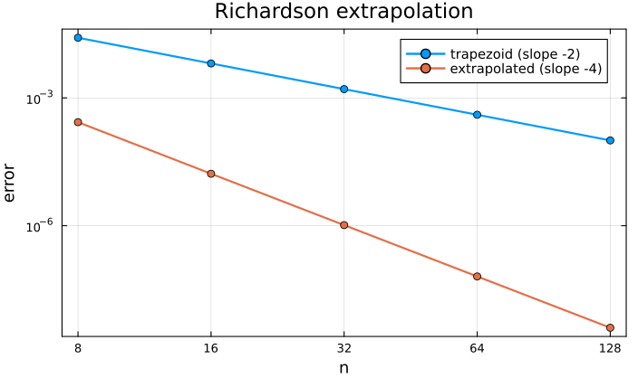
Plot code
using Plots ns = [4, 8, 16, 32, 64] eT = [abs(trap(sin, 0, π, 2n) - I) for n in ns] eR = [abs((4trap(sin, 0, π, 2n) - trap(sin, 0, π, n)) / 3 - I) for n in ns] plot(2ns, [eT eR], xscale = :log10, yscale = :log10, marker = :circle, lw = 2, label = ["trapezoid (slope -2)" "extrapolated (slope -4)"], xlabel = "n", ylabel = "error", xticks = (2ns, string.(2ns)), title = "Richardson extrapolation")Romberg integration. Richardson extrapolation applied to the trapezoidal rule. (Burden, Faires, and Burden 2016, sec. 4.5)
Gaussian quadrature with respect to more general weights \(w(x)\). E.g. Gauss–Chebyshev (\(w(x) = (1-x^2)^{-1/2}\)), Gauss–Laguerre and Gauss–Hermite quadrature on unbounded intervals. (Süli and Mayers 2003, Ch. 10)
How to deal with improper integrals? Integrands with singularities or infinite intervals of integration: change of variables, subtracting off the singularity, … (Burden, Faires, and Burden 2016, sec. 4.9)
Adaptive quadrature. Refine the mesh only where the integrand needs it. (Burden, Faires, and Burden 2016, sec. 4.6)
Clenshaw–Curtis quadrature. Integrate the Chebyshev interpolant exactly. How does it compare with Gaussian quadrature? (Surprisingly well!) (Trefethen 2008; Trefethen 2019, Ch. 19)
The exponentially convergent trapezoidal rule. ★ The trapezoidal rule is only second order accurate in general, but converges extremely fast for smooth periodic functions. Explain why (e.g. using the Euler–Maclaurin formula or Fourier series). (Trefethen and Weideman 2014)
TipQuick experiment# trapezoidal rule for the periodic f(x) = exp(cos x) on [0, 2π] vs. non-periodic exp(x) on [0, 1] trap(f, a, b, n) = (h = (b - a) / n; h * (sum(f(a + k * h) for k in 1:n-1) + (f(a) + f(b)) / 2)) I1 = 7.954926521012845 # ∫_0^{2π} exp(cos x) dx = 2π I_0(1) I2 = exp(1) - 1 println(" n periodic error exp(x) error") for n in (2, 4, 8, 16, 32) println(lpad(n, 2), " ", rpad(abs(trap(x -> exp(cos(x)), 0, 2π, n) - I1), 23), abs(trap(exp, 0, 1, n) - I2)) endOutput:
n periodic error exp(x) error 2 1.7405350514516433 0.03564926400578017 4 0.03439691880919238 0.008940076098471472 8 1.251688931169781e-6 0.002236763705256717 16 8.881784197001252e-16 0.000559300120949402 32 1.7763568394002505e-15 0.00013983185728205783For the smooth periodic integrand, 16 points already give machine precision; for \(e^x\) on \([0,1]\) the error only decreases like \(n^{-2}\).
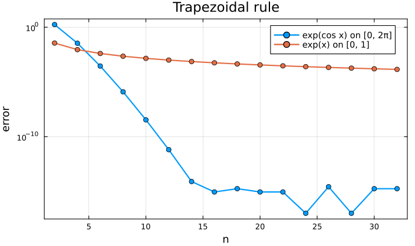
Plot code
using Plots ns = 2:2:32 e1 = [max(abs(trap(x -> exp(cos(x)), 0, 2π, n) - I1), 1e-17) for n in ns] e2 = [abs(trap(exp, 0, 1, n) - I2) for n in ns] plot(ns, [e1 e2], yscale = :log10, marker = :circle, lw = 2, label = ["exp(cos x) on [0, 2π]" "exp(x) on [0, 1]"], xlabel = "n", ylabel = "error", title = "Trapezoidal rule")Monte Carlo integration and the curse of dimensionality. Quadrature rules become very expensive in high dimensions. Monte Carlo methods converge slowly, at the rate \(N^{-1/2}\), but this rate does not depend on the dimension. (Caflisch 1998)
TipQuick experimentusing Random; Random.seed!(1) # ∫ over [0,1]^d of (x_1^2 + ... + x_d^2) dx = d/3 for d in (1, 10, 100) exact = d / 3 for N in (10^2, 10^4, 10^6) est = sum(sum(abs2, rand(d)) for _ in 1:N) / N println("d = $d, N = $N: relative error = ", round(abs(est - exact) / exact, sigdigits = 2)) end endOutput:
d = 1, N = 100: relative error = 0.11 d = 1, N = 10000: relative error = 0.0014 d = 1, N = 1000000: relative error = 0.00047 d = 10, N = 100: relative error = 0.022 d = 10, N = 10000: relative error = 0.0044 d = 10, N = 1000000: relative error = 0.00023 d = 100, N = 100: relative error = 0.0047 d = 100, N = 10000: relative error = 0.00084 d = 100, N = 1000000: relative error = 5.9e-5The error decreases roughly like \(N^{-1/2}\) in every dimension (the results are random, so they jump around). A tensor-product trapezoidal rule with only 2 points per direction would already need \(2^{100}\) points in \(d = 100\).
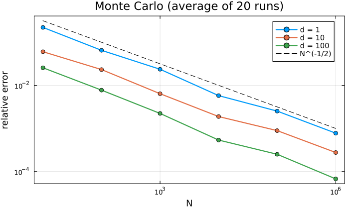
Plot code
using Plots Ns = [10^k for k in 1:6] plt = plot(xscale = :log10, yscale = :log10, xlabel = "N", ylabel = "relative error", title = "Monte Carlo (average of 20 runs)") for d in (1, 10, 100) errs = [sum(abs(sum(sum(abs2, rand(d)) for _ in 1:N) / N - d / 3) / (d / 3) for _ in 1:20) / 20 for N in Ns] plot!(plt, Ns, errs, marker = :circle, lw = 2, label = "d = $d") end plot!(plt, Ns, 1 ./ sqrt.(Ns), ls = :dash, color = :black, label = "N^(-1/2)")The Golub–Welsch algorithm. ★ The nodes and weights of Gaussian quadrature can be computed from the eigenvalues and eigenvectors of a symmetric tridiagonal matrix. Links Chapters 4 and 5. (Golub and Welsch 1969)
Rodrigues’ formula for Legendre or Chebyshev polynomials. Orthogonal polynomials (whose zeros are the nodes for Gaussian quadrature) can be written as derivatives of simple functions. (Süli and Mayers 2003, Ch. 9)
Chapter 4.5: Integrating initial value problems
Runge–Kutta methods. Higher order one-step methods; the classical RK4 method and Butcher tableaux. (Süli and Mayers 2003, Ch. 12; Burden, Faires, and Burden 2016, sec. 5.4)
Adaptive time stepping. Embedded Runge–Kutta pairs (e.g. the Dormand–Prince method used by
ode45in MATLAB) estimate the error and adjust the step size automatically. (Burden, Faires, and Burden 2016, sec. 5.5; Driscoll and Braun 2017, Ch. 6)Stiff equations. ★ Why explicit methods need very small time steps for some problems, and how implicit methods (e.g. backward Euler) avoid this. (Burden, Faires, and Burden 2016, sec. 5.11)
Symplectic integrators. The Störmer–Verlet method conserves energy (approximately) over very long times, unlike Euler or RK4. Demonstrate with planetary orbits or a pendulum. (Hairer, Lubich, and Wanner 2003)
Chapter 5: Solving linear systems of equations
Conditioning of the Vandermonde matrix and its implications. Interpolating in the monomial basis requires solving a Vandermonde system. How badly conditioned is it, and why does this mean we should use other bases (e.g. Lagrange or Chebyshev)? Links to Chapter 3. (Higham 2002, Ch. 22)
TipQuick experimentusing LinearAlgebra println(" n cond (equispaced) cond (Chebyshev)") for n in (5, 10, 20, 40) xe = range(-1, 1, length = n + 1) xc = [cos(j * π / n) for j in 0:n] V(x) = [xi^k for xi in x, k in 0:n] println(lpad(n, 2), " ", rpad(round(cond(V(xe)), sigdigits = 3), 20), round(cond(V(xc)), sigdigits = 3)) endOutput:
n cond (equispaced) cond (Chebyshev) 5 63.8 36.9 10 14000.0 2880.0 20 8.31e8 1.81e7 40 2.82e20 7.78e14The condition number grows exponentially even for Chebyshev points: the problem is the monomial basis, not the points.
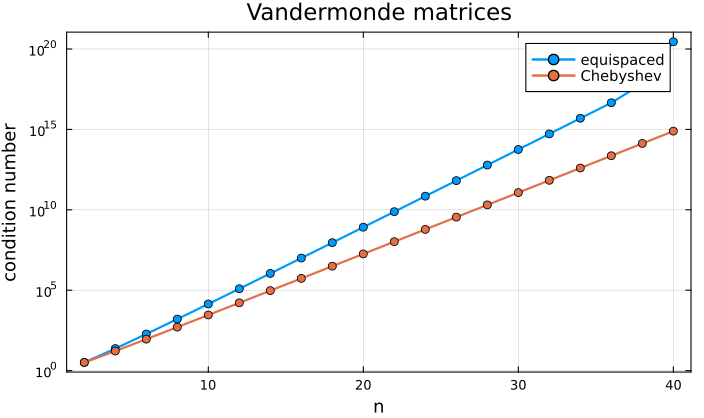
Plot code
using Plots V(x, n) = [xi^k for xi in x, k in 0:n] ns = 2:2:40 ce = [cond(V(range(-1, 1, length = n + 1), n)) for n in ns] cc = [cond(V([cos(j * π / n) for j in 0:n], n)) for n in ns] plot(ns, [ce cc], yscale = :log10, marker = :circle, lw = 2, label = ["equispaced" "Chebyshev"], xlabel = "n", ylabel = "condition number", title = "Vandermonde matrices")Gershgorin circle theorem. A simple way of locating eigenvalues of a matrix in the complex plane. (Süli and Mayers 2003, Ch. 5)
TipQuick experimentusing LinearAlgebra A = [4.0 1 0.5; 0.2 -3 0.3; 1 0.1 8] for i in 1:3 r = sum(abs, A[i, :]) - abs(A[i, i]) println("disc $i: centre ", A[i, i], ", radius ", r) end println("eigenvalues: ", round.(eigvals(A), digits = 4))Output:
disc 1: centre 4.0, radius 1.5 disc 2: centre -3.0, radius 0.5 disc 3: centre 8.0, radius 1.0999999999999996 eigenvalues: [-3.0274, 3.8963, 8.131]Each eigenvalue lies in one of the discs (here the discs are disjoint, so there is exactly one in each).
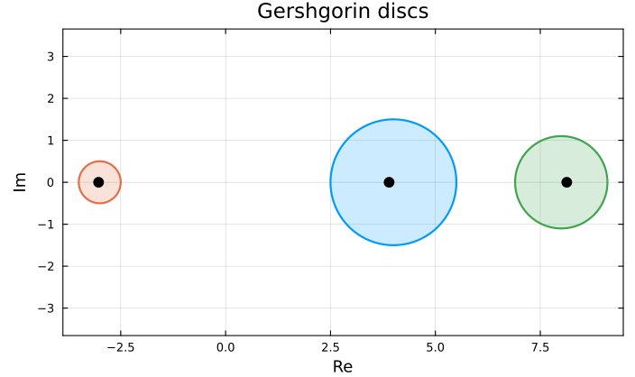
Plot code
using Plots plt = plot(aspect_ratio = 1, xlabel = "Re", ylabel = "Im", title = "Gershgorin discs", legend = false) θ = range(0, 2π, length = 200) for i in 1:3 r = sum(abs, A[i, :]) - abs(A[i, i]) plot!(plt, A[i, i] .+ r * cos.(θ), r * sin.(θ), fill = (0, 0.2), lw = 2) end λ = eigvals(A) scatter!(plt, real(λ), imag(λ), color = :black, markersize = 6)Lanczos algorithm. ★ Approximating eigenvalues of large symmetric matrices using Krylov subspaces. (Trefethen and Bau 1997, Lecture 36)
Using LU decomposition to solve a tridiagonal system of linear equations. The Thomas algorithm solves tridiagonal systems in \(O(n)\) operations (useful for cubic splines). (Burden, Faires, and Burden 2016, sec. 6.6)
Linear regression. Least squares problems, the normal equations, and why we use the QR decomposition instead. (Trefethen and Bau 1997, Lecture 11; Driscoll and Braun 2017, Ch. 3)
Circulant matrices. Every circulant matrix is diagonalised by the discrete Fourier transform, and so circulant linear systems can be solved in \(O(n \log n)\) operations using the FFT. (Gray 2006)
Toeplitz matrices. Matrices which are constant along each diagonal. How can we exploit this structure? (Gray 2006)
Bauer–Fike theorem on perturbation of eigenvalues. ★ How sensitive are eigenvalues to perturbations of the matrix? (Golub and Van Loan 2013, sec. 7.2)
Iterative methods for linear systems. The Jacobi and Gauss–Seidel methods are simple iterations (Lecture 4) for linear systems. When do they converge? (Burden, Faires, and Burden 2016, sec. 7.3)
PageRank. How Google ranked web pages using the power method for computing the leading eigenvector of a (very large) matrix. (Bryan and Leise 2006)
TipQuick experimentusing LinearAlgebra # links[i] = pages that page i links to (4 web pages) links = [[2, 3], [3], [1], [1, 3]] n, α = 4, 0.85 M = zeros(n, n) for (i, out) in enumerate(links), j in out M[j, i] = 1 / length(out) end G = α * M + (1 - α) / n * ones(n, n) # the "Google matrix" r = fill(1 / n, n) for k in 1:50 global r = G * r # power method end println("PageRank: ", round.(r, digits = 4)) println("check (eigenvalue 1): ", round.(G * r - r, digits = 12))Output:
PageRank: [0.3797, 0.1989, 0.3839, 0.0375] check (eigenvalue 1): [-3.0e-12, 1.0e-12, 2.0e-12, 0.0]Page 3 is ranked highest: three pages link to it. Page 4 has no incoming links at all.
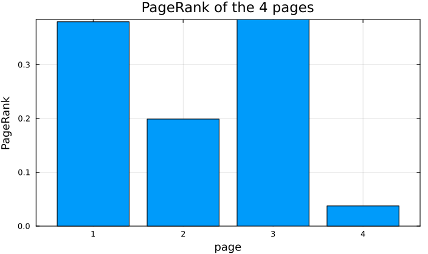
Plot code
using Plots bar(1:n, r, legend = false, xlabel = "page", ylabel = "PageRank", xticks = 1:n, title = "PageRank of the 4 pages")
Others
How JPEG works. JPEG compresses images using the discrete cosine transform, which is closely related to Chebyshev polynomials (recall \(T_n(\cos\theta) = \cos n\theta\)). How does this compare with compressing an image using the SVD? (Wallace 1992)
The Gibbs phenomenon. Approximating a discontinuous function by Fourier series or polynomial interpolants leads to overshoots of about 9% near the jump, no matter how many terms we use. (Trefethen 2019, Ch. 9)
TipQuick experiment# Fourier series of the square wave sign(x) on (-π, π): (4/π) Σ_{k odd} sin(kx)/k S(x, N) = 4 / π * sum(sin(k * x) / k for k in 1:2:N) for N in (11, 101, 1001) t = range(0, 0.5, length = 20001) println("N = $N: max of partial sum = ", round(maximum(S(s, N) for s in t), digits = 4)) end println("overshoot ≈ ", round(2 / π * 1.851937051982466 - 1, digits = 4), " (about 9% of the jump of 2)")Output:
N = 11: max of partial sum = 1.1813 N = 101: max of partial sum = 1.179 N = 1001: max of partial sum = 1.179 overshoot ≈ 0.179 (about 9% of the jump of 2)Adding more terms makes the overshoot narrower, but not smaller.
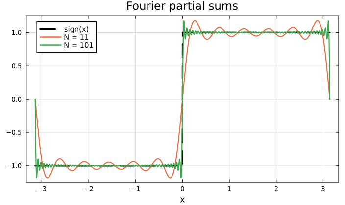
Plot code
using Plots x = range(-π, π, length = 4001) plot(x, sign.(x), lw = 3, ls = :dash, color = :black, label = "sign(x)", xlabel = "x", title = "Fourier partial sums") for N in (11, 101) plot!(x, S.(x, N), lw = 2, label = "N = $N") end plot!()